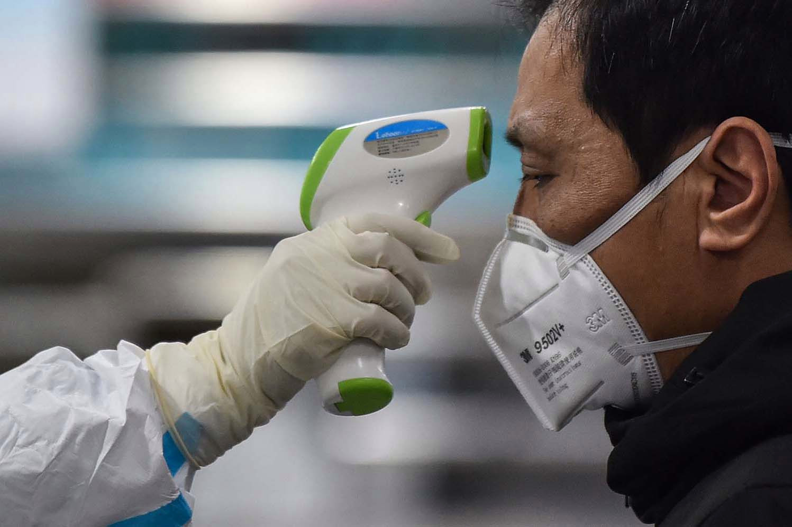
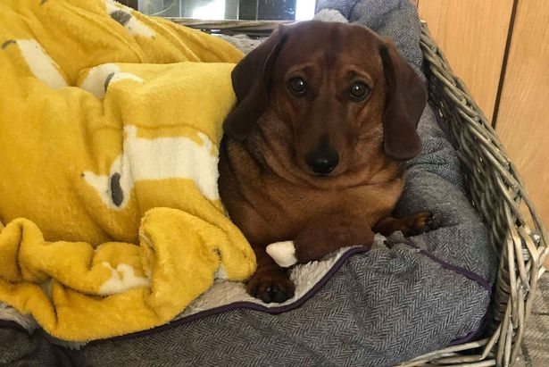

Pierakstīties
Pierakstīties


Vairāk

Pierakstīties
Vai Reksis jau ir pilngadīgs? Vai Čipa jau ir pensijā? Līdz šim sava četrkājainā drauga vecuma aprēķināšanai cilvēka gados visbiežāk tika izmantota vienkāršā formula "suņa vecums reiz septiņi", tomēr pētnieku komanda no ASV universitātēm uzskata, ka šī formula ir gaužām neprecīza.
 30. aprīlis 2020 |
Izklaide
30. aprīlis 2020 |
Izklaide

30. aprīlis 2020. Medicīna

29. aprīlis 2020. Pasaule

30. aprīlis 2020. Izklaide